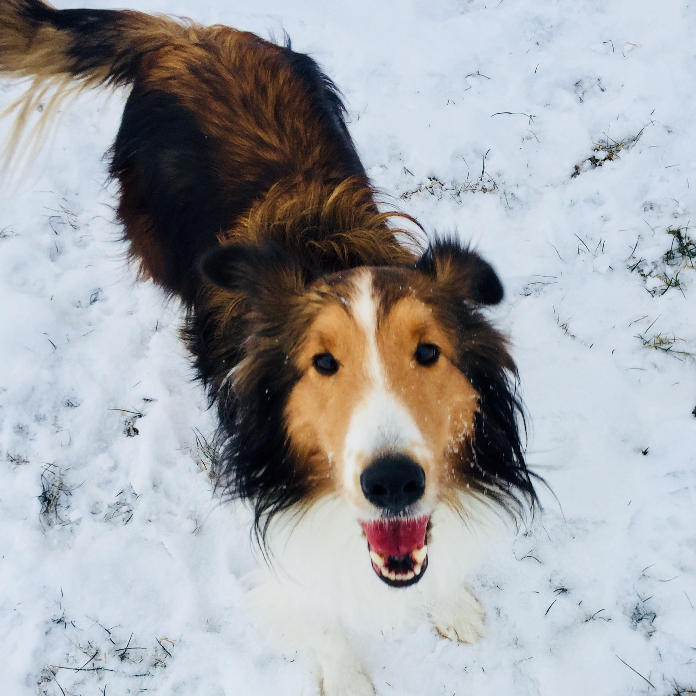

Virtual Pets Amok
There are organic pets and robotic pets. All dogs can be walked at once and each has a cages. Cats share an area and use a common litter box. All pets have a health attribute. Organic pets have their health decreased by unclean circumstances, and by thirst or hunger growing too high. Robotic pets only lose health if they’re not oiled regularly. All pets lose health if their happiness drops too low. Above pic is my actual dog.